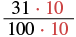
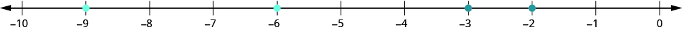

দশমিক সংখ্যার তুলনা করো
উৎস-অনুগত উপবিভাগ · m81293-fs-id1516840। সম্পূর্ণ বইয়ের অনুবাদ এখনও চলছে। গাণিতিক চিহ্ন, সংখ্যা ও মূল কাঠামো অক্ষুণ্ণ; প্রযোজ্য ক্ষেত্রে সূত্রের শব্দলেবেল বাংলায় অনূদিত। মূল ছবির ভিতরের ইংরেজি লেবেলের অর্থ বাংলা বিবরণে আছে। স্বাধীন শিক্ষক ও ভাষা-পর্যালোচনা বাকি। অন্য উপবিভাগের উৎস-লিঙ্কে ইন্টারনেট প্রয়োজন।
দশমিক সংখ্যার তুলনা করো
কোনটি বড়, না
ডলার-সেন্টের অঙ্ক হিসেবে ভাবলে বোঝা যায়, বা চল্লিশ সেন্টের মান বেশি; তুলনার অপর অঙ্কটি হল বা চার সেন্ট। তাই,
আগের অধ্যায়গুলিতে সংখ্যারেখা ব্যবহার করে সংখ্যার তুলনা করেছি। নিচের নিয়মের পাঠ: a < b মানে a হল b-এর চেয়ে ছোট—সংখ্যারেখায় a থাকে b-এর বাম দিকে। a > b মানে a হল b-এর চেয়ে বড়—সংখ্যারেখায় a থাকে b-এর ডান দিকে।
সংখ্যারেখায় ও -এর অবস্থান কোথায়?

সংখ্যারেখায় 0.0 থেকে 1.0 পর্যন্ত 0.1 ব্যবধানে দাগ আছে। একটি বিন্দুতে 0.04 লেখা, আরেকটি বিন্দু 0.4-এ। 0.4 হল 0.40-এর সমতুল এবং এটি 0.04-এর ডান দিকে। সতর্কতা: 0.04 লেখা বিন্দুটি মূল ছবিতে স্কেল অনুযায়ী কিছুটা বামে আঁকা; তার সঠিক স্থান 0.0 থেকে 0.1-এর ব্যবধানের চার-দশমাংশ দূরে।
আমরা দেখি, যে সংখ্যাটির ডান দিকে আছে, সেটি হল তাই জানি, সম্পাদকীয় সতর্কতা: মূল ছবির 0.04 লেখা বিন্দুটি স্কেল অনুযায়ী কিছুটা বামে আঁকা; ছবিটি থেকে তার নিখুঁত স্থান মেপো না। 0.04-এর সঠিক স্থান শূন্যের ডান দিকে চার শতাংশ দূরে, অর্থাৎ 0.0 থেকে 0.1-এর ব্যবধানের চার-দশমাংশ দূরে। মূল ছবি ও তার লেখা অপরিবর্তিত আছে; তুলনার ফল 0.40 > 0.04 সঠিক।
কোনটি বড়, না এখানে ডলার-সেন্টের অঙ্ক ধরে সহজে তুলনা করা যায় না। তবে ও -কে ভগ্নাংশে প্রকাশ করলে কোনটি বড় তা বোঝা যায়।
| ভগ্নাংশে প্রকাশ করো। | ||
| তুলনা করার জন্য ভগ্নাংশ দুটির হর একই করতে হবে। |  ভগ্নাংশের লব 31 × 10 এবং হর 100 × 10; লব ও হরের গুণক 10 দুটি লাল রঙে। মূল ভগ্নাংশ 31/100-এর লব 31 ও হর 100; উভয়কে 10 দিয়ে গুণ করে সমতুল ভগ্নাংশ পাওয়া হচ্ছে। |
|
যেহেতু তাই জানি, সুতরাং
খেয়াল করো, -কে ভগ্নাংশে প্রকাশ করার সময় প্রথমে লিখেছিলাম এবং শেষে পেয়েছি সমতুল ভগ্নাংশ আবার -কে দশমিকে লিখলে পাই সুতরাং -এর সমতুল দশমিক রূপ হল দশমিক বিন্দুর ডান দিকের অঙ্কগুলির শেষে শূন্য লিখলে সংখ্যার মান বদলায় না।
দুটি দশমিক সংখ্যার মান একই হলে তাদের সমতুল দশমিক সংখ্যা বলা হয়।
তাই ও -কে সমতুল দশমিক সংখ্যা বলি।
মনে রেখো, দশমিক বিন্দুর ডান দিকের অঙ্কগুলির শেষে শূন্য লিখলে সংখ্যার মান বদলায় না। সম্পাদকীয় স্পষ্টীকরণ: পরের পদ্ধতিতে আগে চিহ্ন ও পূর্ণসংখ্যার অংশ দেখবে। একটি ঋণাত্মক ও অন্যটি অঋণাত্মক হলে ঋণাত্মক সংখ্যাটি ছোট। দুটি অঋণাত্মক সংখ্যার পূর্ণসংখ্যার অংশ আলাদা হলে সেই অংশের তুলনাই ফল নির্ধারণ করে। পূর্ণসংখ্যার অংশ সমান হলেই নিচের দশমিক-ঘর তুলনার ধাপ কাজে লাগে। দুটি সংখ্যাই ঋণাত্মক হলে মাইনাস চিহ্ন বাদ দিয়ে পাওয়া মান দুটি তুলনা করে ফলের ক্রম উল্টে দাও; যেমন −0.8 < −0.1।
অনুশীলন · এই প্রশ্নের লিঙ্ক
নিচের দশমিক সংখ্যাগুলি তুলনা করো। উপযুক্ত চিহ্ন বসাও—
- ⓐ
- ⓑ
সমাধান
| ⓐ | |
| দুটি সংখ্যার পূর্ণসংখ্যার অংশই 0। দশমিক ঘরের সংখ্যা সমান নয়, তাই 0.6-এর দশমিক বিন্দুর ডান দিকের 6-এর পরে একটি শূন্য লেখো। | |
| দশমিক বিন্দুর ডান দিকের অঙ্কগুলি দিয়ে তৈরি সংখ্যা দুটিকে অঋণাত্মক পূর্ণসংখ্যার মতো তুলনা করো। | |
| উপযুক্ত অসমতার চিহ্ন দিয়ে তুলনার ফল লেখো। |
| ⓑ | |
| দুটি সংখ্যার পূর্ণসংখ্যার অংশই 0। দশমিক ঘরের সংখ্যা সমান নয়, তাই 0.83-এর দশমিক বিন্দুর ডান দিকের অঙ্কগুলির শেষে একটি শূন্য লেখো। | |
| দশমিক বিন্দুর ডান দিকের অঙ্কগুলি দিয়ে তৈরি সংখ্যা দুটিকে অঋণাত্মক পূর্ণসংখ্যার মতো তুলনা করো। | |
| উপযুক্ত অসমতার চিহ্ন দিয়ে তুলনার ফল লেখো। |
ঋণাত্মক দশমিক সংখ্যার তুলনা করার সময় ঋণাত্মক পূর্ণসংখ্যার তুলনার নিয়ম মনে রাখা জরুরি। সংখ্যারেখায় বড় সংখ্যা ডান দিকে থাকে। যেমন, সংখ্যারেখায় -এর ডান দিকে থাকে বলে জানি, একইভাবে ছোট সংখ্যা সংখ্যারেখায় বাম দিকে থাকে। যেমন, সংখ্যারেখায় -এর বাম দিকে থাকে বলে জানি,

সংখ্যারেখায় −10 থেকে 0 পর্যন্ত পূর্ণসংখ্যাগুলি দেখানো আছে। −9, −6, −3 ও −2-তে বিন্দু চিহ্নিত। −2 রয়েছে −3-এর ডান দিকে, তাই −2 > −3। −9 রয়েছে −6-এর বাম দিকে, তাই −9 < −6।
দুটি সীমানা ধরি ও এদের মধ্যবর্তী অংশটিকে বড় করে দেখলে একইভাবে পাই,
অনুশীলন · এই প্রশ্নের লিঙ্ক
উপযুক্ত চিহ্ন দিয়ে তুলনা করো—। সংখ্যাজোড়াটি হল
সমাধান
| দশমিক বিন্দু দুটি একই উল্লম্ব রেখায় রেখে সংখ্যা দুটি একটির নীচে আরেকটি লেখো। | |
| দুটি সংখ্যায় দশমিক ঘরের সংখ্যা সমান। | |
| যেহেতু দশাংশের মান বেশি; তুলনার অপর মানটি হল দশাংশ। |